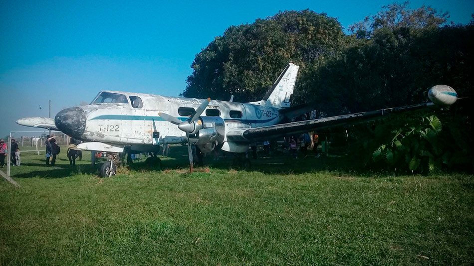

En el 2005, la ley provincial 13.393 lo declaró “Bien de Interés Histórico Testimonial” (modificatoria 14.675-año 2015), y en 2006 se sumó la Ordenanza 14.898 de 2006 que caracterizó al predio como «Zona de preservación ecológica ambiental a forestar». En 2007, la Ordenanza 15.391 ratificó el espacio como zona a preservar, por ser un verdadero pulmón ecológico y reserva natural, convirtiendo al ex Aeroclub en patrimonio de interés histórico y cultural.

Volver a la página 1
¿Una Reserva Natural en el conurbano profundo?
Volver a la Página 2:
Datos de la Rerserva Natural de Laferrere